تنبلی نتیجه شکل خاصی از پاداش غیرخطی است
تعاریف
ما میزان پاداش حاصل از تلاش را بصورت یه تابع سیگمویدی با 3 متغیر مدل سازی خواهیم کرد. این متغیر ها به ترتیب :
همیچنین R را به عنوان تابع پاداش و C را به عنوان تابع ضرر در نظر می گیریم. ضرر نسبت خطی با زمان دارد.
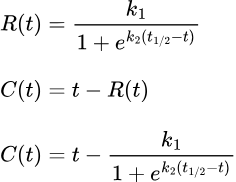
طرح مساله
2 مثال از حل های این معادله را در ادامه می بینید. همانطور که مشاهده می کنید.، با مقادیر استفاده شده در مثال اول، ما چیزی مشابه «انرژی فعالسازی» روبرو هستیم. همین انرژی فعالسازی عامل تنبلی و اهمال کاریست. اما در مثال دوم چنین عاملی مشاهده نمی شود. پس مساله چنین است :
به ازای چه مقادیری از متغییر ها، در نمودار زیان عامل فعالسازی مشاهده می شود؟

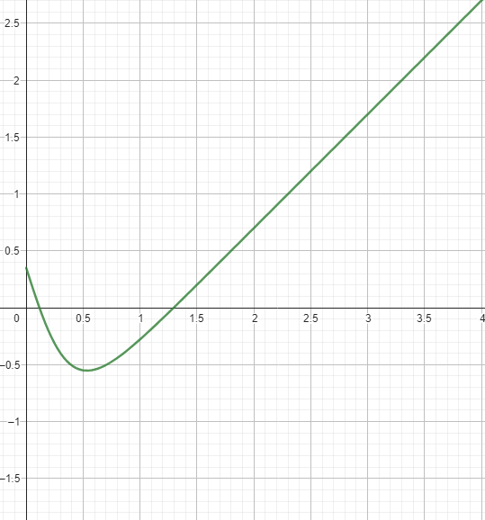
حل
قبل از مشاهده راه حل، پیشنهاد می کنم خودتون تلاش به حل مساله کنید.
خب قاعدتا اولین مرحله پیدا کردن مشتق تابع ضرر برحسب زمان هست :
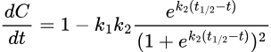
با یک جایگزینی برای ساده سازی داریم:
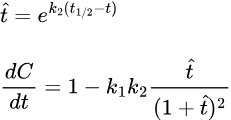
خب حالا نکته اینجاست
چیزی که در نگاه اول بنظر میاد اینه که بیایم نقاط بحرانی رو با ریشه های مشتق پیدا کنیم. بعد بر اساس عبارت هایی که تعیین کننده ماکسیمم و مینیمم بودن این نقاط بحرانین و تعداد اونها، شرایط لازم برای بوجود آوردن انرژی فعالسازی رو بدست بیاریم
و اگرچه این روش درسته اما در عمل ما می مونیم کلی روابط پیچیده و کار به نسبت خیلی سخت میشه. حب پس چیکار کنیم؟
این نمودار مشتق تابع ضرر به ازای مقادیر خاصی از پارامتر هاست. حالا اگر بتوانیم ثابت کنیم به ازای همه مقادیر، چنین شکلی از مشتق دوم خواهیم داشت (داری یک نقطه بحرانی)،جل مساله بسیار ساده تر می شود.
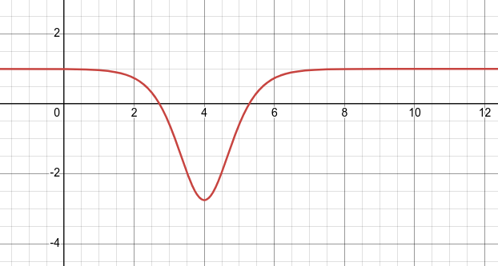
پس داریم :
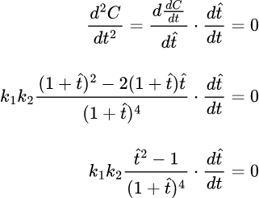
همچنین داریم (با فرض اینکه k2 صفر نباشد) :
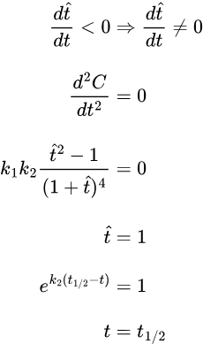
در نتیجه ثابت کردیم، به ازای همه مقادیر پارامتر ها، تابع ضرر حداکثر یک نقطه بحرانی داشته و به عبارتی به همان شکل مثال است
حال در چه شرایطی ما این به اصطلاح «انرژی فعالسازی» را مشاهده می کنیم؟ وقتی که :
- مشتق تابع ضرر در لحظه شروع مثبت باشد
- تابع مشتق ضرر داری مینیمم با مقدار منفی باشد
پس داریم ما پدیده «انرژی فعالسازی» را داریم، فقط و فقط اگر
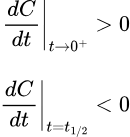
ابتدا شرط دوم را بررسی می کنیم :
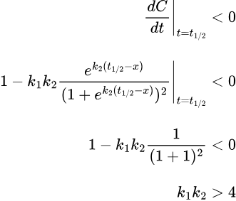
به عبارتی اولین شرط مشاهده این اثر این است که مقدار پاداش در سرعت ارائه پاداش از حد مشخصی بیشتر باشد
از این پس این مقدار را ضریب ضریب سرعت-پاداش می نامیم
در مورد شرط دوم داریم :
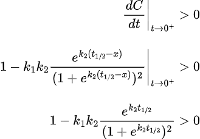
برای بررسی بهتر و سادگی، دوباره از t_hat استفاده می کنیم
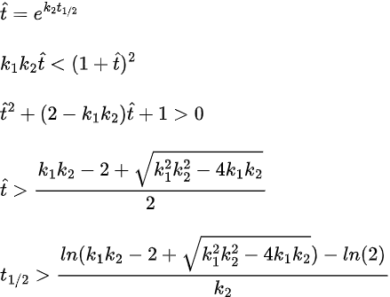
در نتیجه شرط دوم این است که زمان تاخیر در پاداش از حد مشخصی بیشتر تر باشد، که این حد به ضریب سرعت پاداش بستگی دارد
علاوه بر این از این رابطه نتیجه می گیریم که :
- با افزایش ضریب سرعت ، حد پایین تاخیر افزایش میابد
- با افزایش ضریب پاداش ، حد پایین تاخیر کاهش میابد
- در مقادیر ثابت ضریب سرعت-پاداش، افزایش سرعت بی تاثیر بر حد پایین تاخیر است، درحالیکه افزایش پاداش منجر به کاهش حد پایین تاخیر میشود
نتیجه گیری و بحث :
بر طبق فرضیه که مطرح کردیم، عامل اهمال کاری به طور عام، مینیمم نسبی در زمان صفر است که از این پدیده با «انرژی فعالسازی» نام بردیم. برای حل این مشکل باید حداقل یکی از دو شرط وجود آنرا از بین ببریم
شکستن شرط اول
بیاد بیارید که شرط اول این بود که ضریب سرعت-پاداش از 4 بیشتر باشد
در نگاه اول بنظر میاد کاهش این ضریب باعث حل مساله اهمال کاری خواهد شد. اما در واقع در صورتی که این ضریب از مقدار تعیین شده کمتر باشد، تابع ضرر اکیدا صعودی بوده و به عبارتی فرد اصلاانگیزه انجام کار را نخواهد داشت(اثبات؟)
شکستن شرط دوم
-
اولین راه حل کاهش تاخیر در ارائه پاداش هست.
در نگاه عام هم این زمان تا حد خوبی به ذات درس وابستگی دارد. اما می توانیم حداقل به دو روش اونرو افزایش بیدیم
-
جزوه ساختار یافته : می توان جزوه را بگونه ای نوشت که نیاز به خوانش مجدد برای درک نباشد. در بین دانشجویان پزشکی معروف است که باید یک دور آناتومی رو بخونی ، تا بتونی آنتاموی رو درباره بخونی و یه چیزی دستگیرت شود. عملا در این صورت ما در حال به تاخیر انداختن پاداش هستیم وزمان ریادی دانشجو جزوه می خواند و وقت میگزارد بدون آنکه چیری بدست آورد. در حالیکه با یک جزوه یا آمورش درست می توان این مشکل رو حذف کرد. علاوه بر این محاسبات آماری معتبر هم نشان می دهند ساختار بندی جزوه بر زمان یادگرفتن و فراموش کردن مطالب نقش بسیار زیادی دارد.
-
مدل کورسی آموزش : در برابر مدل ترمی آموزش، که در آن مطالب به طور همزمان در طول ترم تدریس شده و همه مطالب در انتهای ترم به عنوان امتحانات پایانی آزموده می شون، در مدل کورسی ( که به عنوان مثال در مقطع فیزیوپاتولوژی بسیاری از دانشگاه های علوم پایه کشور اجرا می شود)، مطالب جدا گانه آموزش و پس از مدت زمان کوتاهی بعد از آموزش آزموده می شوند. بدین ترتیب عملا تاخیر زمانی بین مطالعه و پاداش کاهش یافته و حداقل حد بحرانی تاخیر و انرژی فعالسازی کاهش می یابد
-
-
راه حل دوم اثر گذاری بر مقدار پاداش و سرعت پاداش است
-
تغییر واحد دروس : افزایش ضریب پاداش معادل افزایش اهمیت می باشد. اگرچه این عامل بیشتر به ذات تکلیف بر میگردد میتوانیم به صورت انتخابی، مثلا با افزایش واحد یک درس، اونرو تعییر بدیم
-
تقسیم امتحانات در طول ترم : می تونیم جوری نمره سنجی رو تنظیم کنیم که شیب ارائه پاداش کاهش یافته و به اصطلاح پاداش تکه تکه عرضه شود. ساده ترین مثالش تقسیم امتحانات تو طول ترم و نه صرفا در پایان ترم هست. هر چه زمان سنجش به زمان مطالعه نزدیکتر باشه، مطالعه بهتر و راحت تر
به طرز جالبی قبلا این فرضیه در عمل آزمایش و اثبات شده. دن ایرلی، آزمایش جالبی را روی دانشجویان دانشگاه MIT انجام داد که داد که در آن ثابت شد، در صورت پخش بودن امتحانات، نتایج دانشجویان به طرز معنا داری بهتر است. کتاب ایشون به نام Predictably Irrational برای علاقمندان به روانشناسی علمی و آماری بشدت توصیه می شود.
در این استراتژی بر خلاف استراتژی کورسی ، تاخیر در ارائه پاداش تغییر نمی کند. شما در نهایت برای دریافت تمام پاداش نیازمند این هستید که تا پایانترم صبر کنید، در حالیکه در سیستم کوزسی فقط لازم است تا پایان کورس صیر کرد.
به عبارتی در سیستم کورسی ما تاخیر را کم می کنیم به این صورت که تکلیف دانشجو سریع معلوم می شود. در حالیکه در سیستم تقسیم امتحانات، صرفا فطره و مرحله مرحلهاداش و نمره دانشجو را ارائه می کنیم
-
سوالات آخر فصل برای افراد علاقمند
- ما در این جا، تابع پاداش را محدود به تابع سیگموئید کردیم. تابع پاداش رو به هر نوع تابع غیر خطی بسط داده و نتایج بسط داده را گزارش کنید
- بجای بررسی صفر و یکی «انرژی فعالسازی»، مقدار اون رو محاسبه کرده و ارتباط آن را با پارامتر های تعریف شده بیابید